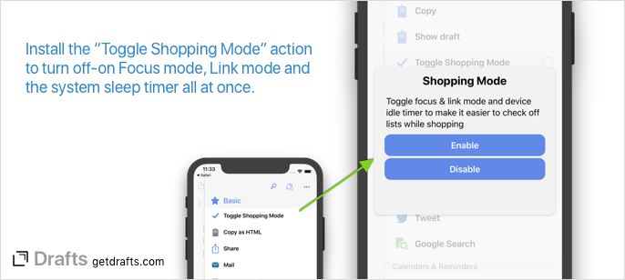

Task lists with tappable task marks are easy to create in Drafts. We will briefly touch on that below, but this article is focused more on tips to make it easier to check items off the list. Anyone who has ever hit the grocery store with a list of items in a notes app (Drafts, Apple Notes, or others) knows there can be some real annoyances to trying to use that list at the store to check off items and get your shopping done. If these sound familiar, this article is for you:
- Oops, I meant to tap the checkbox, not edit the note!
- Dang it, my phone went to sleep again, lets do the Face/Touch ID dance to wake it up and check off “Bananas”.
With a few simple tweaks in Drafts, this can be a lot easier. This article explains several of the options available to make lists work better for you and puts it all together at the end with a single action to enable/disable them all!
Creating Task Lists
The Drafts editor supports simple text-based tasks using square brackets. In either the Markdown or Simple List syntaxes, simply typing [ ] (open bracket, space, close bracket) creates a tappable task mark.
Drafts also ships with a convenience action called “Tasks” in the “Editing” action group, the default action group for the action bar. This action can be reinstalled from the Action Directory if you have deleted it. The “Tasks” action behaves similarly to the checkbox button in the default Apple Notes app, creating or removing task marks at the beginning of each line in the selected text. This action makes it easy to convert a typed list to tappable marks. If no text is selected, it simply converts the current line.
Using the “Simple List” Syntax
Most users keep drafts in the default “Markdown” syntax. This works great for lists, but Drafts allows syntax to be selected on a per-note basis - and each syntax option saves its preferred editor settings (font, font size, margins, etc.) separately. If you change the syntax to “Simple List” for the drafts you use as a list, you can setup a custom configuration optimized for checking off items. Using a larger font and line height the task marks become bigger targets on the screen and easier to tap. To change syntax:
- Open your list drafts in the editor.
- Select “Aa” appearance settings.
- Select the Syntax Highlighting option for the current draft, and change it to “Simple List”.
- Make any changes to the editor settings you find are best for working with the list.
Focus and Link Mode
Two of Drafts mode options are also helpful when working with a list:
- Focus Mode: Enabling focus mode disables the automatic creation of new drafts. This means the current draft will remain active when returning to the app. If you are working on a list, checking off items over time, returning to the same list can be very handy.
- Link Mode: The primary purpose of link mode is to enable tapping on web links, emails, and other data in a draft. It also disables editing of a draft while active. This means that an accident tap that misses the task mark will not show the keyboard and start editing - which can be pretty annoying if you are currently just checking off tasks.
Device Sleep
iOS tries hard to make your battery last all day, which is excellent. To do so, it automatically dims the screen and then puts your device to sleep after no interaction occurs for some time. When it does this, however, returning to what you were doing requires you to wake up the device and unlock it again using Touch/Face ID or by entering your pin. Sometimes, it’s handy to disable the sleep timer so your device will stay awake, and working on a list is one of those times. If you are at the store or just using the phone as a handy checklist next to you on the desk, disabling sleep allows you to quickly check off the next item on the list without the extra hassle of waking up the device and re-authenticating.
Enabling or disabling system sleep is done via script, but you can install this ready to use Toggle Sleep action to use to switch it off and on.
Putting it all together: Shopping Mode

Taken together, each of these tweaks is handy - but no one wants to get to the grocery store and tap 4-5 different things to get where they can start checking off their list. That’s why we put together an all-in-one action:
This action will either enable or disable focus mode, link mode, and the system sleep timer all at once - getting you all ready to work on your list at once.


{kind=link}
{kind=link}
{kind=link}